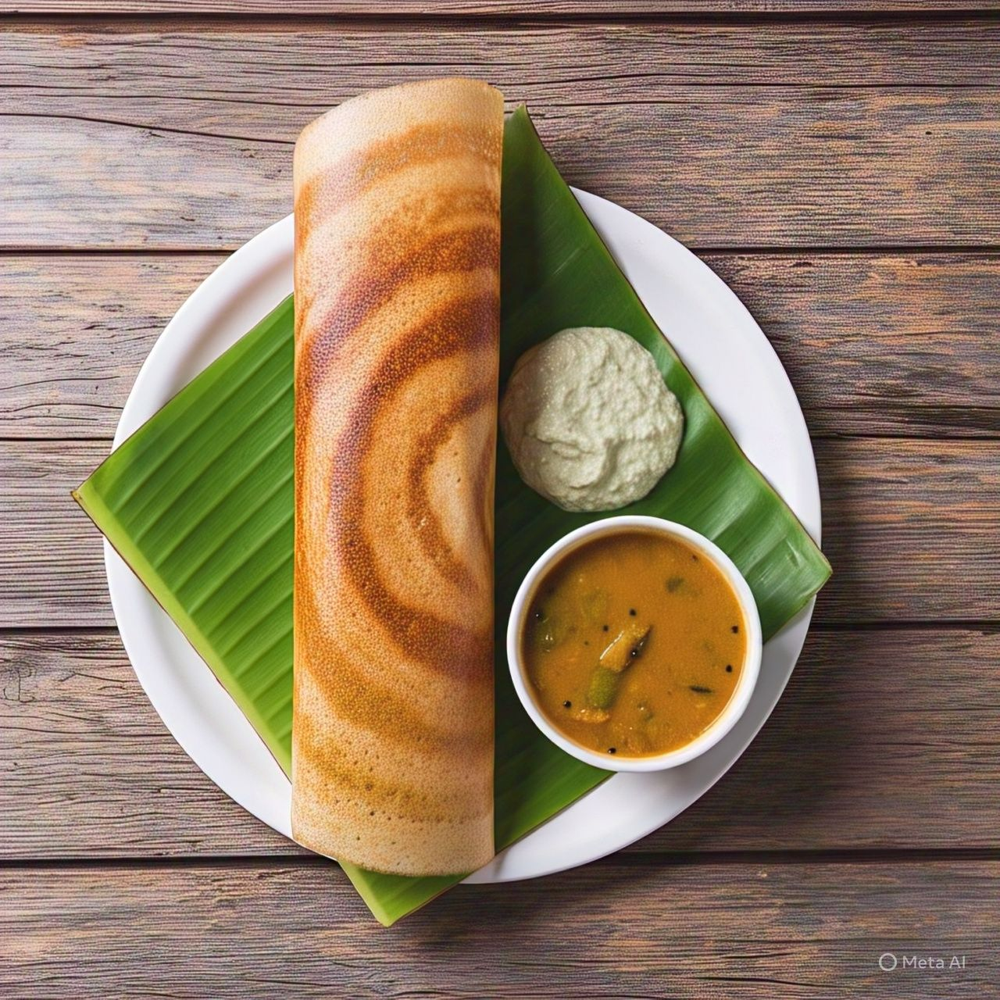

Masala Dosa
⭐⭐⭐⭐⭐ 4.9 Rating | ⏱ 45 Minutes | 🍽 4 Servings
Category
Breakfast
Difficulty
Medium
Calories
260 kcal
Cooking Style
Pan Fried
📋 Ingredients
- 2 Cups Dosa Batter
- 3 Boiled Potatoes
- 1 Onion (Sliced)
- 2 Green Chillies
- 1 tsp Mustard Seeds
- 1 tsp Chana Dal
- 1 tsp Urad Dal
- Few Curry Leaves
- ½ tsp Turmeric Powder
- Salt to Taste
- 2 tbsp Oil
- Butter or Ghee
🍳 Required Utensils
- Dosa Tawa
- Spatula
- Mixing Bowl
- Pan
- Knife
- Serving Plate
📖 Introduction
Masala Dosa is one of the most famous South Indian dishes. It consists of a crispy dosa filled with spicy potato masala and is served with coconut chutney and hot sambar.
🔬 Principle
A thin layer of fermented dosa batter is spread evenly on a hot tawa. The potato masala is placed in the center, and the dosa is folded until crispy and golden brown.
👨🍳 Procedure
- Heat oil in a pan.
- Add mustard seeds, urad dal and chana dal.
- Add curry leaves and green chillies.
- Add sliced onions and sauté until soft.
- Add turmeric powder and salt.
- Add mashed boiled potatoes and mix well.
- Cook for 5 minutes and keep aside.
- Heat the dosa tawa.
- Pour one ladle of dosa batter.
- Spread it in a circular motion.
- Add butter or ghee around the edges.
- Cook until crispy.
- Place potato masala in the center.
- Fold the dosa.
- Serve hot with chutney and sambar.
⚠ Precautions
- Use fermented dosa batter.
- The tawa should be hot but not smoking.
- Spread the batter quickly.
- Do not add too much oil.
- Cook until golden brown.
💡 Chef Tips
- Use cast iron tawa for crispy dosa.
- Add butter before folding.
- Serve immediately.
- Add grated cheese for kids.
🥗 Nutrition Facts
| Nutrient | Amount |
|---|---|
| Calories | 260 kcal |
| Protein | 7 g |
| Carbohydrates | 42 g |
| Fat | 8 g |
🍽 Serving Suggestions
- Coconut Chutney
- Tomato Chutney
- Sambar
- Filter Coffee
🌿 Health Benefits
- Rich in carbohydrates for energy.
- Good source of protein.
- Easy to digest.
- Fermented batter improves gut health.
- Suitable for breakfast and dinner.
✅ Result
The prepared Masala Dosa should be crispy, golden brown, and filled with flavorful potato masala. It should be served hot with coconut chutney and sambar for the best taste.
🎥 Watch Recipe Video
Learn the complete recipe by watching the step-by-step video.
▶ Watch on YouTube